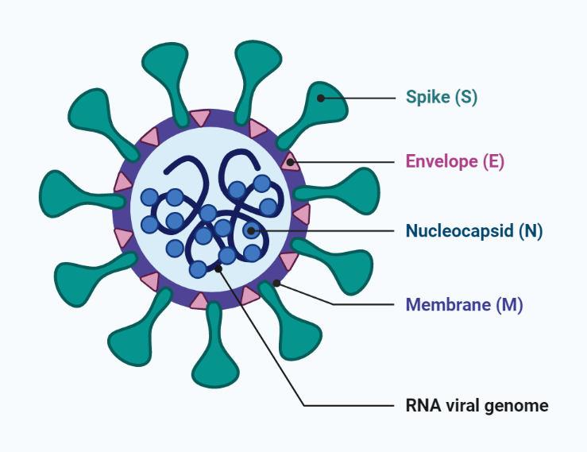
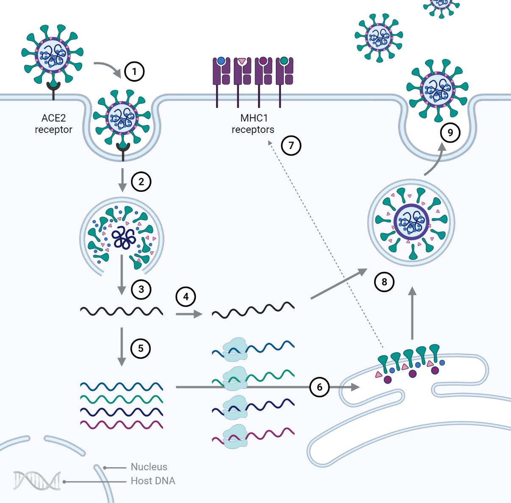

This page outlines the pathways of the SARS-CoV-2 virus and of the
two most widely used vaccines against Covid-19 (the disease caused
by the virus).
MHC1 cell receptors and the immune response
Special receptors (MHC1s) are present on the surface of every
cell.
Fragments of all proteins produced inside the cell, benevolent
or otherwise, will be displayed on these MHC1 receptors.
These fragments will be presented to cells of the immune system.
The immune system will memorise the characteristics of the
protein, and attempt to neutralise or destroy the pathogen
wherever and whenever it is encountered.
SARS-CoV-2

Severe Acute Respiratory Syndrome CoronaVirus 2 (SARS-CoV-2)
carries single-stranded positive sense RNA (+RNA) as its genomic
material
[1]. To gain access to a cell and deposit the viral RNA, a virion
attaches itself to the cell by binding the viral spike (S) protein
to a specific cell receptor (ACE2).
The viral RNA and the spike (S) protein which will be translated
from it are the most important ingredients of the vaccines.
SARS-CoV-2 Pathway

The S protein of SARS-CoV-2 binds to a specific (ACE2) host
cell receptor.
Fusion and entry take place via endocytosis.
Breakdown of the containing endosome and viral proteins, and
release of genomic RNA.
Replication of genomic RNA.
Replication and expression of subgenonomic mRNAs.
Translation of subgenonomic mRNAs into viral proteins by
ribosomes.
Fragments of viral proteins display on host cell MHC1
receptors.
Endosomic containment of genomic RNA and viral proteins,
followed by assembly into new virion.
Virion buds via exocytosis.
Vaccines
The objective of any Covid-19 vaccine is to deliver a modified
version of the SARS-CoV-2 genomic RNA to ribosomes in the host
cell. This modified version only contains the genes for making the
S protein — the ribosomes do the job of translating them.
It must be stressed that the S protein is not infectious
and is merely used as a marker for the immune system to identify.
Currently, the two most widely accepted vaccines for international
travel
[2] are those produced
by AstraZeneca/Oxford and Pfizer/BioNTech. It will be seen from
the diagrams that the methods of translation, assembly and budding
of the S proteins are the same for both vaccines. The major
difference between them is that the Pfizer/BioNTech carries RNA
and the Astrazeneca vaccine carries DNA. The Astrazenaca DNA must
be injected into the nucleus and converted (transcribed) to mRNA
before proteins can be translated, whereas the RNA carried by
Pfizer/BioNTech can start translation as soon as it escapes from
the endosome.
AstraZeneca/Oxford Vaccine
This vaccines employs a harmless, engineered chimpanzee
adenovirus as its vector.
How is it harmless?
All infectious genes are stripped from the DNA during the
production process with the result that it cannot be used to
replicate neither adenoviruses (as there are no longer any genes
that can encode this in the DNA) nor SARS-CoV-2 proteins
(excepting the S protein, the only protein the genes in the DNA
can encode for).
Why a chimpanzee adenovirus?
Adenoviruses, which cause cold-like symptoms, routinely infect
humans. Consequently, the immune system has many defences
against them. Using a human adenovirus as a vector for a vaccine
would therefore mean that there would be a strong chance of it
being destroyed before it was able to enter a cell, rendering
the vaccine useless. Using a chimpanzee adenovirus, unknown to
the immune system, provides a much greater chance of the vaccine
being able to enter a cell and do its work.
How is it engineered?
All adenoviruses carry DNA as the genomic material. The viral
RNA from SARS-CoV-2 is first extracted and then reverse
transcribed [3] back
into DNA. This DNA then replaces the adenovirus DNA, after, as previously mentioned,
all genes save those that encode for the S protein have been removed.
Viral DNA and the host cell nucleus
It is important to emphasise that although the DNA will eventually be inserted into a host cell's nucleus it will not integrate with the host cell's DNA.
The adenovirus fibre binds with the cell's adenovirus
receptor and fusion takes place via endocytosis.
The endosome carries the adenovirus into the cytosol. The
fibers detach and the endosome dissolves, releasing the
capsid.
The capsid is transported to the nucleus.
The capsid injects its DNA through a nuclear pore into the
nucleus.
Viral DNA is transcribed into messenger RNA (mRNA).
Translation of S (spike) protein by ribosomes.
Fragments of viral S displays on the host cell MHC1
receptors.
Endosomic containment of S protein.
The endosome is transported to the cell surface.
S protein exits the cell via exocytosis.
2) Pfizer/BioNTech LNP mRNA Vaccine
LNPs (lipid nanoparticles) do not bind to cell
receptors but rather mimic the appearance of membrane-friendly
molecules which allows them easy access to the cell [4].
The LNP vector carries positive sense mRNA as its genomic
material. This mRNA only codes for the spike (S) protein. The
viral mRNA does not enter the host cell nucleus.
Fusion takes place via endocytosis.
The endosome carries the LNP into the cytosol. Endosome
and lipid bilayer dissolve, releasing the positive sense
RNA.
Translation of S (spike) protein by ribosomes.
Fragments of viral S displays on the host cell MHC1
receptors.
Endosomic containment of S protein.
The endosome is transported to the cell surface.
S protein exits the cell via exocytosis.
The Role of Adjuvants in Vaccines
Adjuvants (not shown in the diagrams) [5] are substances in the vaccines which stimulate
cell-mediated immune responses.
Adjuvants require something of a balancing act: they need to
induce a strong immune response which will attract the attention of cells
from the innate immune system. However,
the response must not be so strong that
the cell is destroyed (or self-destructs) before the
protein fragment on the MHC1 receptor is stored and analysed by the adaptive immune
system.